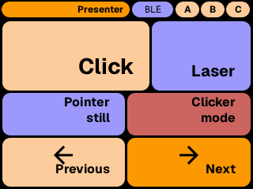

Clicker
ClickerThe Core2 runs the clicker build of the firmware. It has one page and talks to the computer over Bluetooth LE only (the Core2 has no USB data connection). It types the keys of a clicker, and it moves the mouse pointer when you turn it, like an air mouse. It works with any Bluetooth host and with PowerPoint, LibreOffice Impress and the browser slide tools that use the usual keys.


The page
The header shows the title, whether a host is connected (BLE or no BLE) and three indicators A, B and C that light up while the physical buttons are held. A tile you hold turns amber.
| Tile | Key it types | Button |
|---|---|---|
| Previous | Page Up | A |
| Next | Page Down | C |
| Start | F5 (start the slide show) | |
| Blank | B (black screen, again to come back) | |
| End | Esc | |
| Pointer | switches the air mouse on and off | B |
| Laser | Ctrl+L (the laser pointer of PowerPoint) | |
| Click | left mouse button |
With the air mouse on, the page changes to the second screenshot: Click, Laser and a tile to go back to the clicker (Clicker mode), with Previous and Next below.
The air mouse
- The pointer is off until you switch it on (the tile or button B); the setting is remembered.
- While on, turning the board moves the pointer: turn left and it moves left, tilt the nose up and it moves up. Hold the board flat with the screen up, like a remote.
- Held still for a few seconds the pointer falls asleep: it sends nothing, so it cannot drift. A deliberate movement wakes it. Small bumps do not wake it.
- The gyroscope learns its own zero point while the board is held still.
- The speed, the idle time, an upright holding position and the direction of both axes can be tuned over the serial shell (see the shell manual).
Pairing
Pair the board from the host's Bluetooth settings; it advertises as 🌙👻-c2. A host that knew the Core2 before the mouse was added has to forget it and pair again.
Tested
An automated test taps the tiles through the serial shell and reads the keys on the host: Next arrives as Page Down, Previous as Page Up and Blank as B, each as a press and a release; the air mouse is switched on and off through its tile and the page is rebuilt each time. The movement of the pointer itself is tested with a pretend rotation fed into the firmware.
The firmware of the clicker is meant to be delivered on its own, on a shared library; see Repositories.